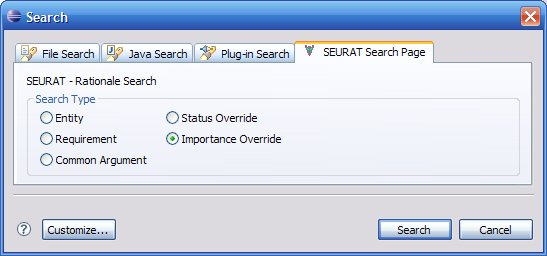

SEURAT provide a query designed to locate importance settings which have been overridden from the defaults. Importance settings can be overridden in a number of ways:
To perform an importance override search you can locate the SEURAT Search Page from the standard Eclipse search window. Select the Importance Override radio button and use the Search Button to execute the query.

The results of the query will be presented in the Eclipse search view. Any of the table column headers may be used to sort on that column's data. You can double click on any of the search results to open an editor for the selected rationale element.